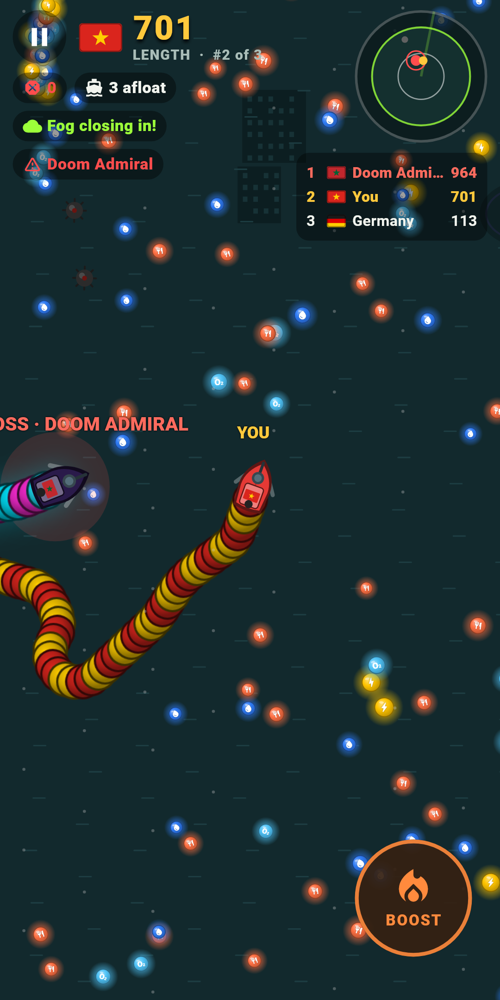
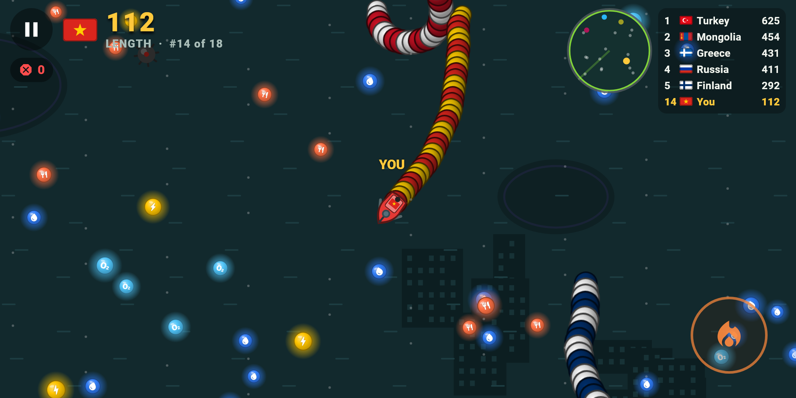
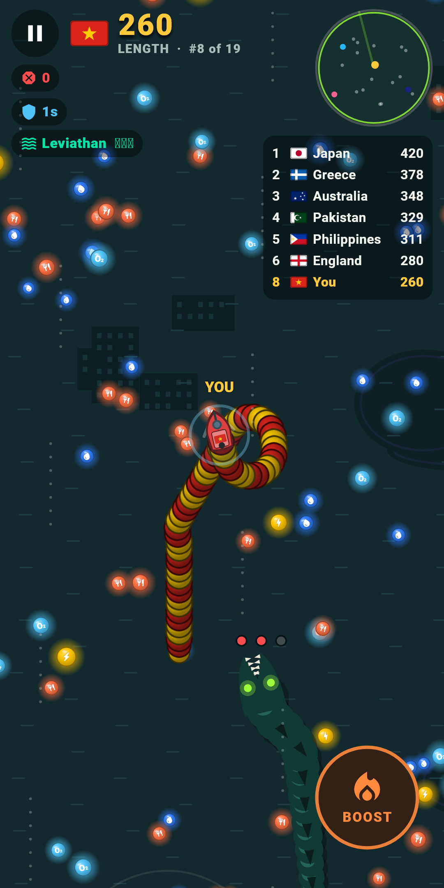
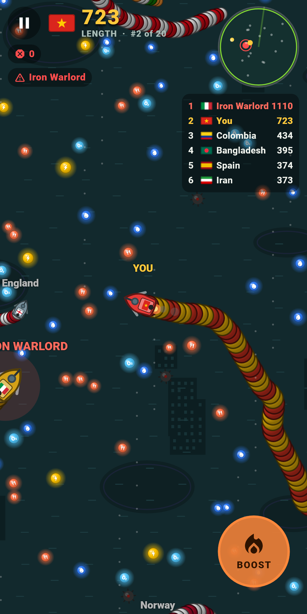
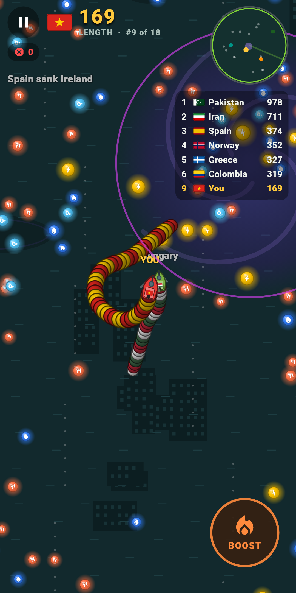
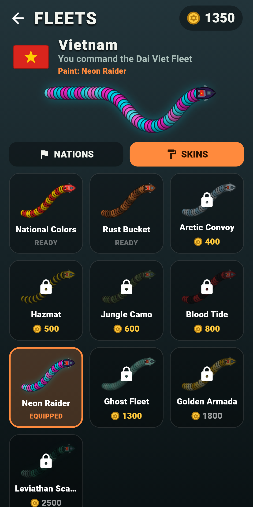
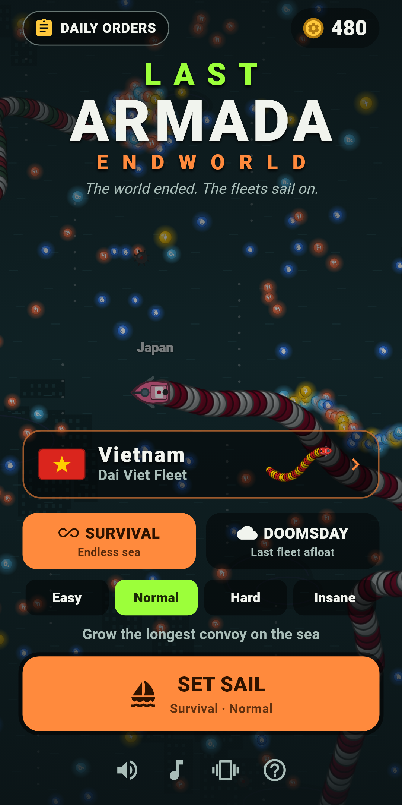
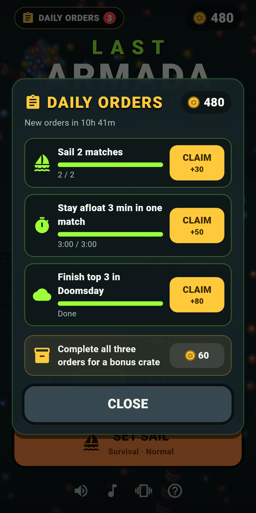
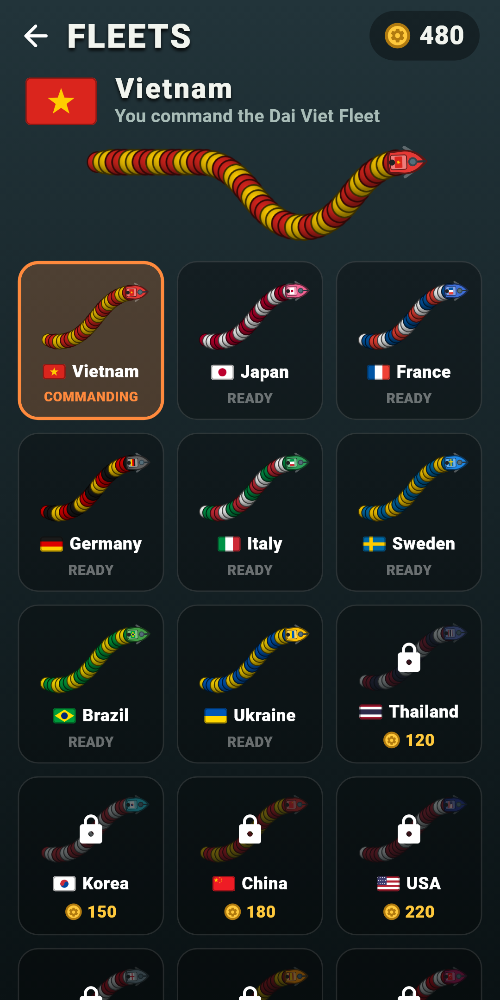
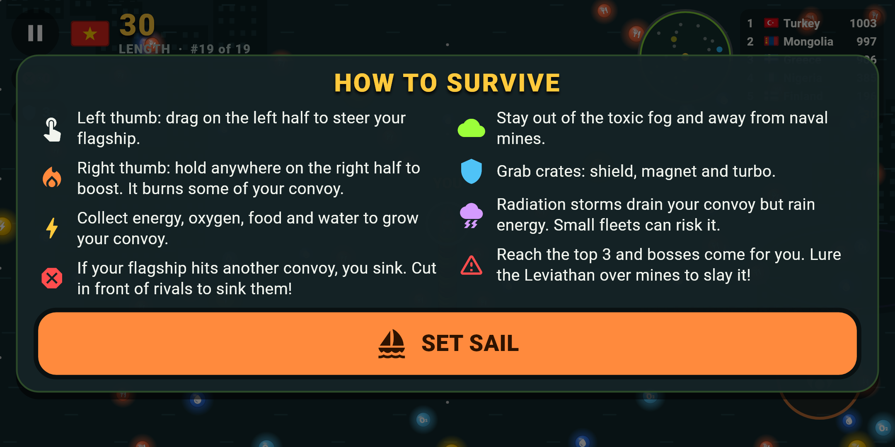

Grow your convoy
Collect energy, oxygen, food and water drifting on the sea. Every pickup adds to the convoy your flagship tows.
Cut them off
If a flagship hits another convoy, it sinks. Boost ahead of a rival, cut across its bow and claim its supplies.
Doomsday mode
The toxic fog closes in every 35 seconds and nobody comes back. Be the last fleet afloat.
The Doom Admiral
Doomsday's final boss joins the last three fleets: armoured bow, minefields and a shield. Sink it to win.
48 nations
Each fleet wears its flag's colours. Your home country is free; unlock the rest with salvage or by watching an ad.
Smart AI fleets
Rivals hunt, dodge and race for wreckage. Four difficulty levels with up to 26 fleets at once.
Two-thumb controls
Plays in landscape by default: left thumb steers, hold anywhere on the right half to boost. Portrait works the same way.
Bosses at the top
Reach the top 3 and the sea fights back: Blood Raider packs, the mine-laying Mine Baron and the armoured Iron Warlord.
The Leviathan
A giant sea serpent rises from the deep, swallows flagships and bites convoys in half. Lure it over mines to slay it.
Radiation storms
Drifting storms drain every convoy inside them but rain rare energy cells. Small fleets can risk it; giants bleed.
Ship skins
Repaint your fleet: Rust Bucket, Hazmat, Neon Raider, Ghost Fleet, Golden Armada and more.
Daily orders
Three new missions every day: sink fleets, haul water or oxygen, survive the fog. Earn salvage and a bonus crate.
Doomsday soundtrack
A brooding harbor theme and pounding battle drums. Turn the music off on its own and keep the sound effects.
Fully offline
No account and no internet needed to play. Shields, magnets, turbo crates and naval mines keep every run different.
What's new
Version 1.4
- Doomsday final boss: when only three fleets are left, the Doom Admiral sails in with an armoured bow, minefields and a shield.
- New daily order: sink a boss or the Leviathan.
- Landscape by default, and two-thumb controls in portrait too (left steers, right boosts).
- A smaller leaderboard in the top corner, and a game-over panel that fits landscape screens.
- Fix: long boss names no longer run into the score on the leaderboard.
Version 1.3
- Landscape mode: tap the screen button in the menu. Left thumb steers, hold anywhere on the right half to boost.
- The game now fills screens with a camera notch.
Version 1.2
- Bosses: Blood Raiders, the Mine Baron and the Iron Warlord hunt the fleets at the top of the leaderboard.
- The Leviathan: a giant sea serpent with three lives. Mines, shield rams and giant convoys wound it.
- Radiation storms: they drain your convoy but rain rare energy cells.
- Ship skins: 9 paint jobs, unlocked with salvage or by watching ads.
- Fix: two flagships meeting head-on no longer both sink. The bigger one wins.
Version 1.1
- Daily Orders: three new missions every day with salvage rewards and a bonus crate.
- Soundtrack: new music for the harbor and for battle, with its own on/off button.
- Double Salvage: watch an optional ad after a match to double your coins.
Screenshots











